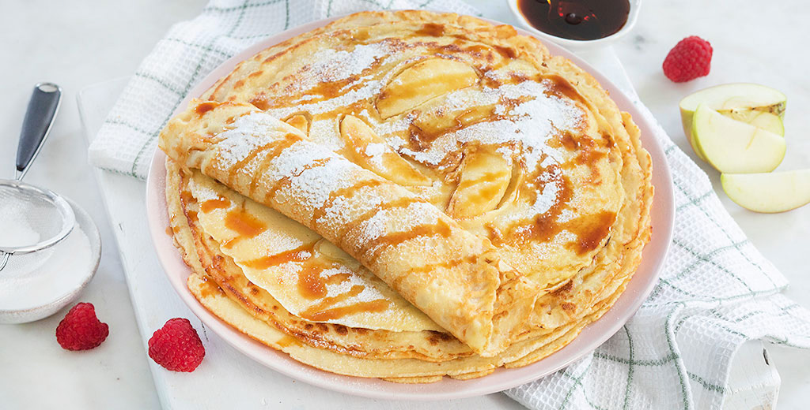

Dutch Pancakes

Ingredients
- 500 ml unsweetened soy milk
- 250 grams of flour
- Block of vegan butter
- Either:
- 1 cup of chickpea fluid from a can (aguafaba)
- 3 tblsp of ground flaxseed mixed with 6 tblsp of water
Steps
- Put the flour in a large mixing bowl and slowly stir in the milk
- Keep stirring until you have a smooth, thin batter
- Add the aguafaba or flaxseed mix to the batter and stir until you see bubbles
- Heat a nice cube of butter in a frying pan and cover the entire surface of the pan with it
- When the butter is hot, add a ladle of batter to the pan and swirl it around until the entire pan is covered
- You can add in sliced apple, vegan bacon or vegan cheese if you like
- When the top of the pancake is dry, flip it over and bake the other side
- While baking the next one, keep the finished pancakes warm in the oven
- Repeat until you have no batter left
- Add your favourite toppings. Hint: the Dutch mainly use regular thick syrup and powdered sugar and roll them up!
Back to all recipes